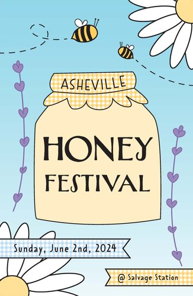

Elisa Longoria
Student and Teacher
My name is Elisa Longoria and I am currently a student at Wake Tech and ECU as well as a marching band instructor at Enloe Magnet High school. I have always had a love for the arts and originally pursued a career in music therapy before trying out graphic and web design. I have a passion for reading, baking, and crafting.
Featured Projects
View selected projects below. More information can be found at my portfolio website.
Beverage Campaign

This was a project for a graphic design class I took at Wake Tech. I conceptualized the entire project from the brand name and logo to the can design and advertisement. The project mostly utlized Adobe Photoshop but I used Adobe Illustrator for some of the label design.
View projectMagazine Cover

This was a final project for a graphic design class I took at Wake Tech. I came up with the magazine name, article titles, and photoshopped the cover image.
View projectPromotional Poster
This was another project for a graphic design class I took at Wake Tech. I was tasked with creating a promotional poster for an event. I created the entire design in Adobe Illustrator and made a promotional instagram post as well.
View projectWork Experience
Most of my experience is in music education, primarily teaching percussion and viola.
Lead Front Ensemble Instructor
Enloe Magnet High School
May 2018 - Present
Independently planned, lead, and directed rehearsals for the marching band and indoor percussion season for a section of 11-14 students. Prepared the ensemble for band camp, performing maintenance of instruments and equipment. Taught music fundamentals and percussion technique.
Magnet Middle School Percussion Ensemble Director
Enloe Magnet High School
February 2024 - April 2024
Conducted an ensemble of 8 percussionists from 4 different middle schools in Raleigh. Taught the basics of percussion technique and other music fundamentals. Independently lead their showcase concert.
Music Theory Teacher and Camp Counselor
Lamar Stringfield Summer Music Camp
July 2023
Assisted with rehearsals and lead daily viola sectionals. Responsible for lesson planning and implementing music theory classes every day. Assisted with daily camp activities including lunch, snack, and after camp care.
Education
Appalachian State University
Music Therapy, August 2018 - December 2022
Recieved the Musical Excellence Scholarship. Consistently made the Dean's or Chancellor's list every semester.
Wake Technical Community College
Graphic and Web Design, January 2023 - present
Completed a Certificate of Graphic Design.
East Carolina University
Psychology, June 2024 - present